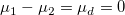
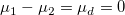
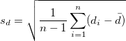
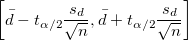

Algorithmen (t-Test bei verbundenen Stichproben)
tTest-PairSample-Algorithm
Diese Funktion wird verwendet, um zu testen, ob die Mittelwertdifferenz von zwei verbundenen Stichproben gleich /math-12f3be74f7266e038bdf61eb68a6208c.png "\mu_d\,\!") ist (d.h., um zu prüfen, ob ihre Mittelwerte gleich sind, können Sie einfach testen, ob ihre Differenz 0 ist, ). Die Hypothesen haben folgende Form:
ist (d.h., um zu prüfen, ob ihre Mittelwerte gleich sind, können Sie einfach testen, ob ihre Differenz 0 ist, ). Die Hypothesen haben folgende Form:
/math-f67a81ef315f0c59070ef53cb50b3932.png "H_0:\mu_1-\mu_2=\mu_d\,\!") vs.
vs. /math-5c09300d675833793616502094acaa0f.png "H_1:\mu_1-\mu_2 \ne \mu_d") Beidseitiger Test
Beidseitiger Test
/math-1fc800dcea3acfe50f9e90c310b1174a.png "H_0:\mu_1-\mu_2 \le \mu_d") vs.
vs. /math-0fbc9ae55928f128a94afcf65c2c2e39.png "H_1:\mu_1-\mu_2 > \mu_d") Oberer Test
Oberer Test
/math-8d8812a65564ffde40d299d450d3de7f.png "H_0:\mu_1-\mu_2 \ge \mu_d") vs.
vs. /math-9a968e5033dd7110b7973529fa35c85d.png "H_1:\mu_1-\mu_2 < \mu_d") Unterer Test
Unterer Test
Teststatistik
Gehen Sie von zwei Stichproben /math-d60f5062564e1ece65993038b62484fa.png "x_1\,\!") und aus, von denen angenommen wird, dass sie aus Grundgesamtheiten mit Normalverteilung stammen und die gleiche Größe haben. Dann kann die Differenz der verbundenen Stichproben definiert werden als:
und aus, von denen angenommen wird, dass sie aus Grundgesamtheiten mit Normalverteilung stammen und die gleiche Größe haben. Dann kann die Differenz der verbundenen Stichproben definiert werden als:
Die mittlere verbundene Differenz beträgt:
/math-2239a6e81d4d585208f48542fcff6792.png "\bar{d}=\frac{1}{n}\sum_{i=1}^n d_i")
Dann können wir die Standardabweichung für die Differenz zwischen den verbundenen Datenpunkten berechnen mit v = n-1 Freiheitsgraden als:

Danach wird die Teststatistik berechnet mit:
/math-a7cc51688366cbdafbc493674976b146.png "t=\frac{\bar{d}-\mu_d}{\frac{s_d}{\sqrt{n}}}")
Vergleichen Sie den t- Wert mit dem kritischen Wert. Wir weisen /math-806277203dedea2ed8321f6cbd465a54.png "H_0\,\!") zurück, wenn:
zurück, wenn:
Für beidseitigen Test: /math-dc78eff8d710d926c9d712cebdb408d0.png "|t| > t_{\sigma/2}\,\!") ;
;
Für oberen Test: /math-b3c71dc9421063ffaf6de1641540a5d5.png "t > t_\sigma\,\!") ;
;
Für unteren Test: /math-b3c0361ff553afb248a469861134f399.png "t < -t_\sigma\,\!") ;
;
Der p-Wert wird auch mit einem anwenderdefinierten Signifikanzniveau /math-3ac6004d77c0cc0055e95c99b9dfd7e0.png "\sigma\,\!") verglichen, für das im Allgemeinen 0,05 verwendet wird. Die Nullhypothese wird zurückgewiesen, wenn
verglichen, für das im Allgemeinen 0,05 verwendet wird. Die Nullhypothese wird zurückgewiesen, wenn /math-d797c315e459e13f929c1778f48760a9.png "p < \sigma\,\!") .
.
Konfidenzintervalle
Das Konfidenzintervall für die Mittelwertdifferenz bei verbundenen Stichproben /math-32a17f0051e09406b2f689fa5f0bb2c5.png "(\mu_1 - \mu_2)\,\!") ist:
ist:
| Nullhypothese |
Konfidenzintervall |
|
 |
|
![\left[\bar{d} - t_{\alpha}\frac{s_d}{\sqrt{n}}, \infty\right]](../images/Algorithm_(PairSampletTest)/math-7b92fed8a3f4aabcf278451dad26b32b.png "\left[\bar{d} - t_{\alpha}\frac{s_d}{\sqrt{n}}, \infty\right]") |
|
|
Analyse der Trennschärfe
Die Trennschärfe eines t-Tests bei zwei Stichproben ist ein Maß für seine Fehlererkennbarkeit. Einzelheiten zu dem Algorithmus zum Berechnen der Trennschärfe lesen Sie im Abschnitt Trennschärfe und Stichprobenumfang.